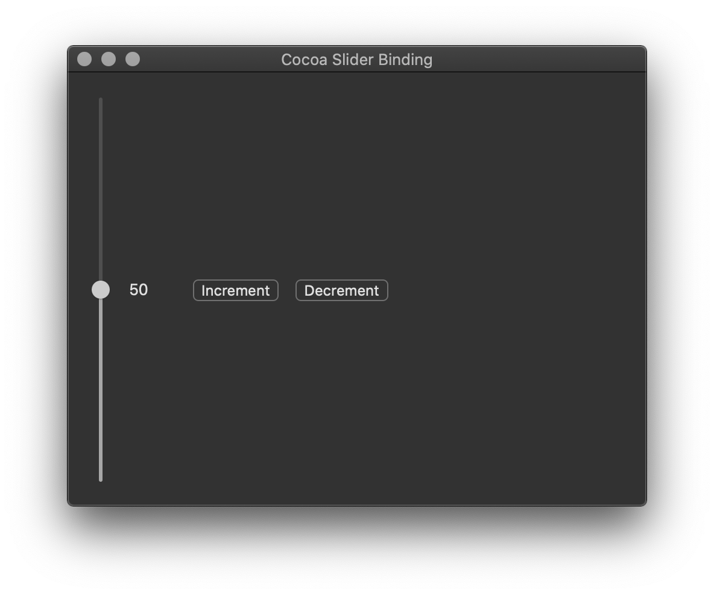

Cocoa - Slider Binding
This post is part of Cocoa UI examples series. It covers the implementation of two way binding of NSSlider with instance variable of the delegate object. Example is built on macOS Catalina and Xcode 11.3. GitHub | Repository name
Add controls
In the Interface Builder vertical slider, two buttons and a label
have to be added to MainMenu.xib window.
It should look like this in the end.

Two way binding
Alternative to binding delegate variable with NSSlider through Interface Builder
is to do it programmatically.
In order to update slider value when delegate instance variable sliderValue
is changed, and to update delegate instance variable sliderValue when
slider value is changed through user interface it is neccessary to set
two way binding.
It is set in awakeFromNib when window object comes to life.
// Programmatically set two way binding between NSSlider value and
// delegate sliderValue variable
[_slider bind:@"value"
toObject:self
withKeyPath:@"sliderValue"
options:@{@"NSContinuouslyUpdatesValue":@YES,
@"NSAllowsEditingMultipleValuesSelectionBindingOption":@YES,
@"NSConditionallySetsEditableBindingOption":@YES,
@"NSRaisesForNotApplicableKeysBindingOption":@YES}];
[self bind:@"sliderValue"
toObject:_slider
withKeyPath:@"value"
options:@{@"NSContinuouslyUpdatesValue":@YES,
@"NSAllowsEditingMultipleValuesSelectionBindingOption":@YES,
@"NSConditionallySetsEditableBindingOption":@YES,
@"NSRaisesForNotApplicableKeysBindingOption":@YES}];
Notify observers
When changing delegate instance variable sliderValue programmatically
in increment and decrement functions, it is neccessary to
send notification to the observers.
[self willChangeValueForKey:@"sliderValue"];
sliderValue--;
[self didChangeValueForKey:@"sliderValue"];
AppDelegate class complete implementation
#import
#import "AppDelegate.h"
@implementation AppDelegate
- (void)awakeFromNib
{
sliderValue = 50;
// Programmatically set two way binding between NSSlider value and
// delegate sliderValue variable
[_slider bind:@"value"
toObject:self
withKeyPath:@"sliderValue"
options:@{@"NSContinuouslyUpdatesValue":@YES,
@"NSAllowsEditingMultipleValuesSelectionBindingOption":@YES,
@"NSConditionallySetsEditableBindingOption":@YES,
@"NSRaisesForNotApplicableKeysBindingOption":@YES}];
[self bind:@"sliderValue"
toObject:_slider
withKeyPath:@"value"
options:@{@"NSContinuouslyUpdatesValue":@YES,
@"NSAllowsEditingMultipleValuesSelectionBindingOption":@YES,
@"NSConditionallySetsEditableBindingOption":@YES,
@"NSRaisesForNotApplicableKeysBindingOption":@YES}];
// Programmatically set action method for NSSlider
[_slider setTarget:self];
[_slider setAction:@selector(sliderValueChanged)];
}
#pragma mark Action methods
- (IBAction)increment:(id)sender
{
if (sliderValue == 100)
{
return;
}
//When changing variable directly explicitly
//trigger the notification to the observers
[self willChangeValueForKey:@"sliderValue"];
sliderValue++;
[self didChangeValueForKey:@"sliderValue"];
[self updateLabel];
}
- (IBAction)decrement:(id)sender
{
if (sliderValue == 0)
{
return;
}
//When changing variable directly explicitly
//trigger the notification to the observers
[self willChangeValueForKey:@"sliderValue"];
sliderValue--;
[self didChangeValueForKey:@"sliderValue"];
[self updateLabel];
}
- (void)sliderValueChanged
{
[self updateLabel];
}
- (void)updateLabel
{
[_label setStringValue:[NSString stringWithFormat:@"%d", (int)sliderValue]];
}
@end